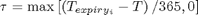
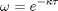
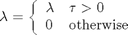
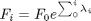

Two Factor Forward Curve Simulation
A two factor Monte-Carlo model that simulates a commodity forward term structure based on long and short contract months.
Contents
CommodityForward2
function [F rho]=CommodityForward(F,T,expiry,s1,s2,mu1,mu2,kappa,dt,rho,a1,a2,zeta1,zeta2,model,evolve)
Input Parameters
| F0 | vector of initial forward rates |
| dates | valuation dates |
| expiry | contract expiry dates |
| sig1,sig2 | volatility of long and short contracts |
| mu1,mu2 | drift of long and short contracts |
| kappa | speed of mean reversion |
| dt | length of time slice in years |
| rho | correlation between long and short contracts |
| alpha1,alpha2 | seasonality adjustment to long and short volatility starting at January |
| eta1,eta2 | long and short normal random deviants |
Output Parameters
| F | matrix of simulated forward rates with dim(dates,expiry) |
alpha1 = a1(expiry(1,:)); % long seasonality factor alpha2 = a2(expiry(1,:)); % short seasonality factor F = [F;zeros(length(T)-1,length(expiry))]; % Iterate across contract months for i=1:length(expiry(2,:))
Time to expiry and mean reversion speed


tau = max((expiry(2,i) - T(1:end-1))/365,0);
speed = exp(-kappa(i) .* tau);
lambda = model(mu1,mu2,speed,dt,alpha1(i),alpha2(i),s1,s2,rho,zeta1,zeta2);
Flatten forward rates where node date >= contract expiry

lambda = lambda .* (tau & tau);
Evolve the forward rate based on partial sums

F(2:end,i) = evolve(F(1,i),lambda);
end
rho = corrcoef(zeta1,zeta2);
Input argument "expiry" is undefined.
Error in ==> CommodityForward at 33
alpha1 = a1(expiry(1,:)); % long seasonality factor
end